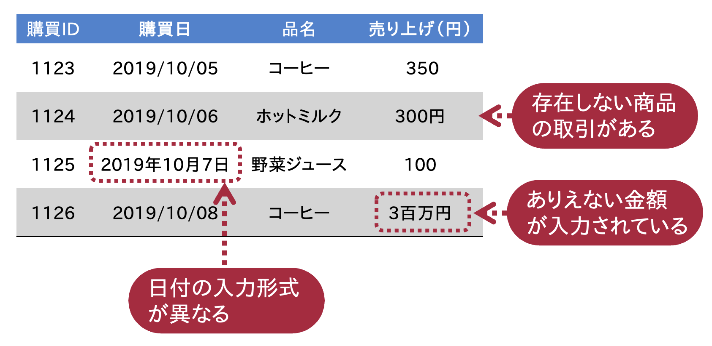

2. データベースの概念#
今日，データベースは様々な業務やアプリケーションに利用されている． 例えば，Amazonや楽天市場といったオンラインショッピングサイトにおいては，購買管理や在庫管理を行うためにデータベースが用いられている． InstagramやTiktokといった，多数のユーザがコンテンツを投稿するソーシャルメディアでもデータベースは欠かせない． 個人用ブログのような比較的小規模なアプリケーションにおいても，記事データを管理するためにデータベースが用いられる（例: WordPress）． データを語る上で，データベースはなくてはならないものである．
本章では，データベースの概念を説明した後，最も代表的なデータベースであり，かつ本講義の主要テーマである関係データベース の概要について説明する．
Warning
データベースを学ばないデータサイエンティスト
データサイエンティストになりたいという学生が増えている． 最近はデータサイエンスに関する書籍もたくさん出版されている． インターネット上にも有益な学習コンテンツが無料で公開されているし，Kaggleのような学習者のモチベーションをくすぐるデータ分析のコンペティションプラットフォームもある．
そういったものを活用してデータ分析技術について学習している学生の中には，機械学習や統計モデリング等の分析技術はよく知っていても，データベースのことを分かっていない学生をちらほら見かける． こういった人は，大規模なデータを自分で収集・整形したりすることができない． 当然ながら，データベースを設計することもできない．
それが何が悪いのか？ データを管理している人がきれいなデータを用意してくれればよく，データサイエンティストはデータの分析技術を極めればよいのではと思った方もいるかもしれない． たしかに，データ分析チームに必要なデータを用意してくれる専門家がいれば問題ない． しかし，データ分析基盤を用意する専門家であるデータエンジニアがチームにいるのは，データ利活用文化が浸透している先端的な組織くらいである． そういった企業においては，企業内にあるデータベースに格納されたデータを分析者自らが収集する必要がある．
データを管理する人材が乏しくても，企業内でデータベースがきちんと整備されている場合はマシである． しかしながら，データ分析プロジェクトが立ち上がったものの，
データ分析基盤は用意されていない
分析対象となるデータも分析可能な形で整備されいない
といったケースが，特に非IT企業や中小規模の組織では起こりえる（参考: 「データ分析失敗事例集」「実践的データ基盤への処方箋」）． データ活用人材が不足する業界においては，こういった事態を打開することが「データサイエンティスト」には（暗に）期待されている．
上記のような理由から，データ分析を学ぶ学生にとってデータベースを学ぶことは大い重要である．
2.1. データベースとは#
データを収集・利用する文化が根付いてきたこともあり，データベースという言葉が市民権を得つつある． しかし，それが意味するものは一般人とIT屋とは大いに異なる． 一般人にとってのデータベースとは「データの集まり」くらいの意味である． 一方，IT屋にとってのデータベースは
複数の応用目的での共有を意図して，組織的にかつ永続的に格納されたデータ群（北川博之著「データベースシステム」より）
あるいは
データの正しさを管理する主体によって体系的に整理され，計算機によって永続的に格納されたデータの集まり（吉川正俊著「データベースの基礎」より）
を指す． 特に「データの正しさを組織的に管理する」という概念が重要である．
データベースを扱うためのシステムは，データベース管理システム（database management system, DBMS） と呼ばれる． 本来データベースとはDBMSによって管理されるデータ群を指すが，DBMS（あるいはDBMSとそれによって管理されるデータ群）のことをデータベース（DB）と呼ぶこともある．
増え続ける多様かつ大量のデータと付き合っていくためには，データのうまい管理・処理方法が必要になる． 適当にデータを作ってはExcelシートやフォルダ（ディレクトリ）に突っ込んでおくというやり方は，扱うデータが増え，データを使う人やアプリが増えると破綻する． IT屋が考えるデータベースは，こういった事態を防ぐための強力なツールである（★Quiz1★）．
2.1.1. データ処理の際に求められる機能#
日々発生する大量のデータをやりとりをうまく処理するために，以下のような要件が求められる．
2.1.1.1. 多様かつ大規模なデータの管理#
ビジネス等の現場では，多種多様で大量のデータが時々刻々と発生している． 例えば，2020年12月31日までの12か月間に，Amazon.co.jpで購買された商品の数は5億点以上とされている（出典）． 小規模な表データならExcelでも十分かもしれない． しかし，データの規模が大規模になり，かつ表データの登録・更新の担当者の数が増えていくと… データの管理が破綻するのは想像に難くない （そもそもExcelは1つの表につき100万行までしか扱えない）． Excelのようなスプレッドシートでは，購買データのように多様かつ大規模なデータを効率よく集積，管理するのは，到底無理である．
2.1.1.2. データの正しさの保証#
管理するデータが大量かつ多様になってくると，データの正しさを保つことが難しくなってくる． 管理対象となるデータに誤りのあるデータが混入すると，大変なことになる． 例えば，下の図のように購買データの中に
あり得ない売り上げ金額が入っている
入力形式が異なる日付が入っている
取扱商品リストにないはずの商品が購買履歴に入っている
といったことが起きると，オンラインショッピング事業においては一大事である． このようにデータ管理においては，格納されるデータの正しさ，データ間の矛盾のなさを保証する機能が求められる．

2.1.1.3. 高速で効率的なデータ処理#
データが大量に格納できたとしても，対象となるデータを高速に処理できなければ使い物にならない． 数百万件の書籍の情報を格納したシステムがあっても，ニーズを満たす書籍リストの検索結果を出力するのに何分もかかるシステムは使われない． ユーザが増えるほどシステムに対する負荷は増える． 例えば，Amazon.co.jpでは毎分平均900個以上の商品取引が行われている（出典）． このように大量のデータのやりとりが発生するケースでは，データは高速に処理されることが望ましい（★Quiz2★）．
2.1.1.4. 同時実行（並列処理）#
関連して，大勢の人が同時にデータを検索，追加，更新，削除しても，問題なく動作することも重要である． 例えば，Xさん，Aさん，Bさんはとあるネット銀行の口座を利用しているとしよう． Xさんの預金額は100万円だとする． さて，振り込みがあった際，振込先口座の残高の計算は
残高 = 振り込み時の「振込先口座」の残高 + 振込額
振込元口座の残高の計算は
残高 = 振り込み時の「振込元口座」の残高 - 振込額
となる．当たり前の計算であるが，次のような状況を考えてみよう． ある日，AさんとBさんがXさんの口座に「まったく同時」に10万円送金したとする． この際，先の計算式をそのまま適用すると，以下の図のような処理になる．
2名の振り込み後のXさんの口座の残高は110万円．こんなことが起きたら大変である． 上の処理のまずかった点は，たとえ全く同時に行われたとしても，Aさんの振り込み処理を待ってからBさんの処理を行うべきだったという点である．
このようにデータ処理の種類によっては，別の処理が完了したことを保証した後に処理をすすめなければ，大惨事になる もし処理の途中で何らかのエラーが起きた場合は，すべての処理をキャンセルして最初の状態に戻すことが求められる． 同時にアクセスがあった場合でも，安全にデータを処理できることも重要な要素である．
2.1.1.5. アクセス権限のコントロール#
データによっては，誰でも閲覧してよいものもあれば，特定の立場のユーザしかアクセスできないようにすべきデータがある． 多種多様なデータのやりとりが発生するケースでは，ユーザの種別ごとにデータの閲覧，作成，更新，削除といったアクセス権限を管理する機能が必要となる．
2.1.2. データベースを用いるメリット#
一人で扱えるほどデータが小規模であれば，Excelなどのソフトウェアでデータ管理しても間に合う． しかし，扱うデータが多様かつ大規模になると，データ処理の質が変わるため，データ処理の方法を変える必要がある．
本稿で学ぶデータベースを用いれば，データを一元管理が可能になり，データ管理・データ利活用における様々な恩恵を受けられる． 具体的には，データベースが備える以下のような性質あるいは関連技術を用いることで，前節で述べた「データ処理に求められる要件」をクリアすることができる（★Quiz3★，★Quiz4★）．
大規模なデータの管理：「物理的データ格納方式」の工夫によって対応
データの正しさの保証：「一貫性制約」によって対応
高速で効率的なデータ処理：「インデックス」「問い合わせ最適化」などで対応
同時実行，データの共同利用：「トランザクション」などで対応
アクセス権のコントロール：「ロール管理」によって対応
Note
データ独立化：データとアプリを切り離す
データを処理する何らかのアプリケーション（以下，アプリ）を開発する場合，データベースを使わなくても
ファイルにデータを書き込むこと
アプリのコードの中にデータやデータの定義，データ処理方法を埋め込むこと
も考えられる． このようなアプローチはアプリ開発やデータ分析の初心者が陥りやすい発想である． 処理するデータが小規模であったり，ユーザがアプリをインストールしている計算機の所有者に限定されるなどの場合は上記のような対応でもなんとかなる． しかし，わたし自身も経験があるが，
複数のユーザに同時に利用してもらうアプリを開発する場合
蓄積したデータを複数のアプリケーションで共有して使い回す場合（例：ユーザ情報をショッピングサイトやメールサイトで使い回す）
データをファイルで管理したり，プログラムコードの中に埋め込む形式では，「データ処理の際に求められる機能」で述べたような不都合が生じることに気づく．
データベースを使うと，アプリケーションからデータを切り離すことができる． データベースはデータの処理・管理方法を一元化する（データの形式や処理の部分を一手に引き受ける）ことで，アプリケーションやデータ分析のコードから冗長な箇所を排除することができ，
ソフトウェア開発者はアプリケーションの開発，
データ分析者はデータの分析処理
に集中することが可能となる． また，同じデータが何度も作られる，正しくないデータが作られるということも減るので，データそのものの寿命も延び，データベースの価値も高まるのである．
2.2. “データ”のモデリング#
2.2.1. モデリングとは？#
科学やビジネスの世界では，モデルあるいはモデリングという用語がしばしば登場する． ビジネスプロセスモデル，物理モデル，統計モデルなど，世の中には様々なモデルが存在する． モデルとは，複雑な仕組みや現象，状態などを表現・分析・操作しやすくするために，それらから興味のあるところ以外をそぎ落とし抽象化したものである． モデリングとはモデル化，つまりモデルを作る行為である．
2.2.2. データモデリング#
データベースで何らかのデータを扱う際には，データをモデリングする． 世の中に存在するデータは多種多様であり，データを統一的に整理し計算機で処理しやすい形に抽象化（モデリング）する必要がある． データモデリングとは，データベース化すべき情報を取捨選択し，対象データとそれに対する操作に関する枠組み（データモデル; data model）を設計する行為である． 対象とする事象やアプリケーションに応じて適切なデータモデルを設計できれば，データモデルに従って実データを格納，操作していくことになる．
一般に，データモデルは以下の要素をもつ：
データの構造
データの制約条件
データの操作
本講義の主要テーマである関係データベースは，関係データモデル（relational data model） [1]にもとづいて設計されたデータベースである． 関係データモデルの詳細については，次章以降で述べる．
データベース管理システムで扱われるデータモデルとしては，関係データモデル以外にも
ネットワークモデル
階層型データモデル
オブジェクト指向モデル
キーバリュー（key-value）モデル
グラフデータモデル
などがある．
2.2.3. 関係データモデル（導入）#
関係データモデルは，最も代表的なデータモデルである． 1970年にEdgar F. Coddにより提案されたもので，単純ながらその背後には強力な数学的基盤をもつ（★Quiz5★）． 関係データモデルでは，あらゆるのデータを表としてモデル化する．
以下の図は，関係データモデルを用いて作られた授業の履修状況・成績を管理する関係データベースの例である． この関係データベースには以下の3つの表[2]が存在する．
学生テーブル：学籍番号，氏名，入学年度，所属といった学生に関する情報を格納
科目テーブル：科目IDや科目名，開講年度といった科目に関する情報を格納
履修テーブル：どの学生が何の科目を履修し，どんな成績だったかの情報を格納
この例だけ見ると「なんだ，関係データモデルとはただの表か」と思われたかもしれないが，ただの表とは大きく異なる． 関係データモデルで表現された（表）データは，あらかじめ定義された「データの構造」「データの制約」「データの操作」の規則に従ってデータが作られ，関係データベース内に格納される． 例えば，規則として以下のようなものが考えられる：
学生テーブルは「学生ID」「姓」「名」「入学年度」「所属」という見出しをもつ
履修テーブルには，科目名，学生の氏名を格納しない
履修テーブルの成績には「優」「良」「可」「不可」のいずれかしか登録できない
履修テーブルに現れる科目IDおよび学生IDは，必ず学生テーブル，科目テーブルに存在する
学生テーブル，科目テーブルの各テーブルには同じ科目IDは存在しない
このような規則に従って，授業の履修状況や成績を管理するためのデータが複数のテーブルに分割され格納される．
次章以降では，このような規則（すなわち関係データモデル）をどう設計するのか，ただの表にしか見えない関係データモデルがどのように数学的に定式化されているか，なぜ関係データモデルを用いると大規模データの管理が効率的になるか，などについて詳しく述べていく．
2.3. クイズ#
2.3.1. Q1. メジャーなデータベース管理システム#
ウェブ検索エンジンを用いて，世の中にあるメジャーなデータベース管理システムを調べよ． また，調べたデータベース管理システムを「関係データベースを扱うもの」とそうでないものに分類せよ．
2.3.2. Q2. 線形探索#
100万個ある商品リストの中に特定の商品が含まれているかを確認したい． 商品リストの先頭から末尾まで順に商品名を確認するとき，平均で何回（何個）の確認で商品の有無を確認できるか？
2.3.3. Q3. データベース管理システムの利用例#
普段利用しているサービスのうち，データベース管理システムを用いていると思われるものを3つピックアップせよ．
2.3.4. Q4. CSV/TSVファイル#
CSVファイルおよびTSVファイルとは何かを調べよ． また，（データベースと比較して）CSV/TSVファイルに存在する欠点を挙げよ．
2.3.5. Q5. チューリング賞#
関係データモデルを提唱したEdgar F. Codd氏は，計算機科学分野のノーベル賞といわれるチューリング賞の受賞者である． Codd氏以外で，データベースに関する功績でチューリング賞を受賞した人をピックアップせよ．